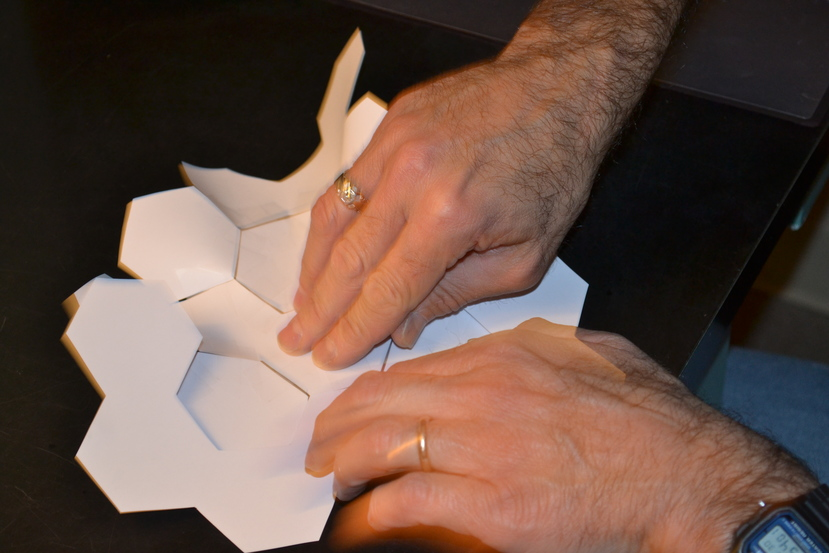
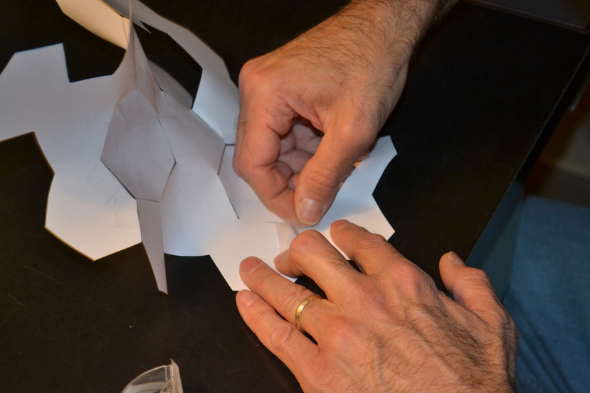

Here is the triangular piece of nine hexagons and the heptagon for its centre, face down.
With both pieces flat on a table, tape one edge of the heptagon to one of the hexagons, using two pieces of tape.
This is the crucial step.
The edge of the heptagon adjacent to the one just taped does not line up with the next hexagon; there is a slight overlap.
To line them up for taping, you have to open up the model a bit.
The slit you cut to the central hexagon in the piece of hexagons will open up with this. Let it.
Securing this position with one hand, put the tape on with the other.
After placing the second piece of tape, your model no longer lies flat.
Continue taping edges adjacent to the ones you have taped.
Let the model buckle, but manipulate it so that the edge you are taping is flat.
You will get to the sixth edge, and tape it.
Where there had been a path to the central hexagon, there is now a gap that is just the right size for taping that hexagon in.
Repeat the steps for the heptagon:
Tape one edge with both pieces lying flat, then open up the model to tape the other two edges.
Now you have a model of ten hexagons surrounding the central heptagon, and it does not lie flat.
There are six `bay'-shaped indentations on the periphery, each formed by three hexagons.
Into each, you will tape a heptagon, as before.
Here is the first heptagon in one bay.
More.
Taping the second.
More.
Finishing it.
Here is the model after taping two hexagons in adjacent bays.
Notice that it becomes more and more bendy.
Rather than go through all steps for a large model, we will describe taping in the `W' shaped piece,
shown below, indicating how it will be attached.
For this, start in the middle, taping the middle hexagon of the W to the hexagon between the two heptagons.
Now start taping the adjacent hexagons to one of the heptagons, working your way out.
 More.
More.
And more.
After surrounding the heptagon, tape the last hexagon in the W to the hexagon just past the heptagon to complete this side of the W.
 Now tape the other side.
Keep taping.
Finally, tape the last hexagon in the W to the hexagon just past the heptagon to finish attaching the W. Here is the model so far.
Here it is after taping come more heptagons to its periphery.
You will want to continue, taping in another W, more heptagons, and any spare hexagons to surround the heptagons.
As the model gets larger, it is harder to work with, but it is more interesting.
Last modified: Fri Apr 7 16:02:07 EDT 2017